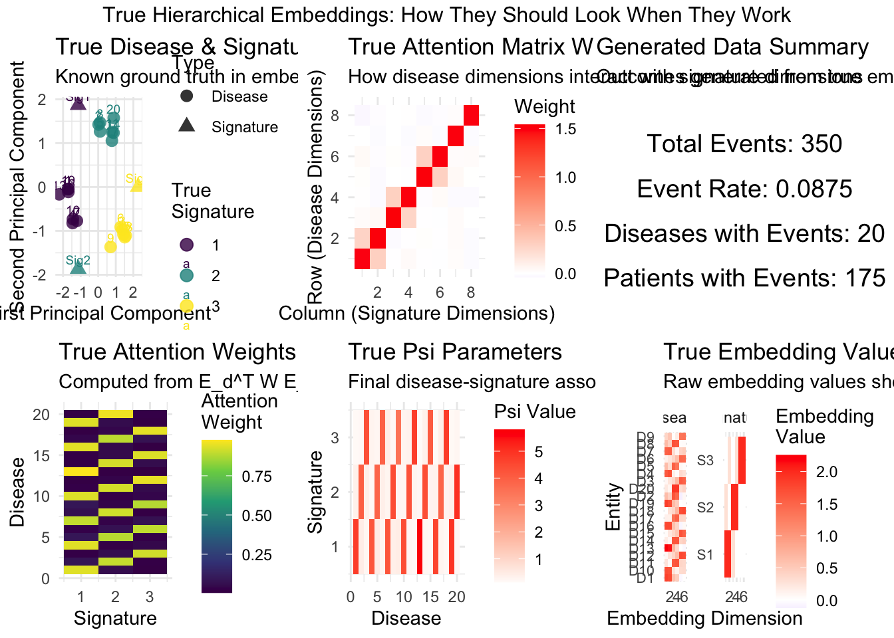

library(ggplot2)
library(dplyr)
Attaching package: 'dplyr'The following objects are masked from 'package:stats':
filter, lagThe following objects are masked from 'package:base':
intersect, setdiff, setequal, unionlibrary(gridExtra)
Attaching package: 'gridExtra'The following object is masked from 'package:dplyr':
combinelibrary(viridis)Loading required package: viridisLitelibrary(reshape2)
library(tibble)
set.seed(42)
# Function to generate data FROM known true embeddings
generate_data_from_true_embeddings <- function(N = 200, D = 20, K = 3, L = 8) {
cat("Generating data from known true embeddings...\n")
# Step 1: Create interpretable TRUE embeddings
# Signature embeddings: each signature occupies its own subspace
E_k_true <- matrix(0, K, L)
for(k in 1:K) {
# Each signature gets strong loading on its own dimensions
start_dim <- (k-1) * (L %/% K) + 1
end_dim <- min(k * (L %/% K), L)
E_k_true[k, start_dim:end_dim] <- 2.0
# Add some shared dimensions for realism
shared_dims <- setdiff(1:L, start_dim:end_dim)
if(length(shared_dims) > 0) {
E_k_true[k, sample(shared_dims, min(2, length(shared_dims)))] <- 0.3
}
}
# Disease embeddings: diseases are mixtures of signature patterns
E_d_true <- matrix(0, D, L)
disease_assignments <- rep(1:K, length.out = D) # Which signature each disease primarily belongs to
for(d in 1:D) {
primary_sig <- disease_assignments[d]
# Strong loading on primary signature dimensions
E_d_true[d, ] <- E_k_true[primary_sig, ] * (0.8 + rnorm(1, 0, 0.1))
# Add some secondary loadings
secondary_sigs <- setdiff(1:K, primary_sig)
for(sec_sig in sample(secondary_sigs, 1)) {
E_d_true[d, ] <- E_d_true[d, ] + 0.2 * E_k_true[sec_sig, ]
}
# Add noise
E_d_true[d, ] <- E_d_true[d, ] + rnorm(L, 0, 0.05)
}
# Step 2: Create TRUE attention matrix W
W_true <- matrix(0, L, L)
# Make it mostly diagonal to preserve structure
diag(W_true) <- 1.5
# Add some cross-connections within signature blocks
for(k in 1:K) {
start_dim <- (k-1) * (L %/% K) + 1
end_dim <- min(k * (L %/% K), L)
if(end_dim > start_dim) {
dims <- start_dim:end_dim
for(i in dims) {
for(j in dims) {
if(i != j) {
W_true[i, j] <- 0.3
}
}
}
}
}
# Add small amount of noise
W_true <- W_true + matrix(rnorm(L^2, 0, 0.02), L, L)
# Step 3: Compute TRUE attention weights
attention_scores_true <- (E_d_true %*% W_true %*% t(E_k_true)) / sqrt(L)
A_true <- exp(attention_scores_true)
A_true <- A_true / rowSums(A_true) # Softmax
# Step 4: Compute TRUE contextualized representations
C_true <- array(0, dim = c(D, K, L))
for(d in 1:D) {
for(k in 1:K) {
C_true[d, k, ] <- A_true[d, k] * E_d_true[d, ]
}
}
# Step 5: Create TRUE psi projection
# Better:
psi_weight_true <- rep(1, L) # All positive, equal weights
psi_bias_true <- 0.1
psi_true <- matrix(0, K, D)
for(d in 1:D) {
for(k in 1:K) {
psi_true[k, d] <- sum(C_true[d, k, ] * psi_weight_true) + psi_bias_true
}
}
# Step 6: Generate synthetic outcome data using this psi
# Simple logistic model: P(disease d for person i) ~ sigmoid(sum_k theta_ik * psi_kd)
theta <- matrix(0, N, K) # Individual loadings on signatures
for(i in 1:N) {
# Each person has different signature loadings
theta[i, ] <- rdirichlet(1, rep(2, K)) # Dirichlet for simplex
}
# Generate disease outcomes
Y <- array(0, dim = c(N, D, 1)) # Simplified to 1 time point
for(i in 1:N) {
for(d in 1:D) {
linear_pred <- sum(theta[i, ] * psi_true[, d])
prob <- 1 / (1 + exp(-linear_pred))
Y[i, d, 1] <- rbinom(1, 1, prob * 0.1) # Scale down probabilities
}
}
return(list(
# True model components
E_d_true = E_d_true,
E_k_true = E_k_true,
W_true = W_true,
A_true = A_true,
C_true = C_true,
psi_true = psi_true,
psi_weight_true = psi_weight_true,
psi_bias_true = psi_bias_true,
# Generated data
Y = Y,
theta = theta,
disease_assignments = disease_assignments,
# Dimensions
N = N, D = D, K = K, L = L
))
}
# Dirichlet distribution sampler
rdirichlet <- function(n, alpha) {
k <- length(alpha)
x <- matrix(rgamma(n * k, alpha, 1), n, k)
x / rowSums(x)
}
# Create comprehensive visualizations
visualize_true_embeddings <- function(data) {
plots <- list()
# 1. True disease embeddings with cluster colors
E_d_pca <- prcomp(data$E_d_true)
disease_df <- data.frame(
PC1 = E_d_pca$x[,1],
PC2 = E_d_pca$x[,2],
Disease = 1:data$D,
TrueCluster = factor(data$disease_assignments),
Type = "Disease"
)
E_k_pca <- prcomp(data$E_k_true)
signature_df <- data.frame(
PC1 = E_k_pca$x[,1],
PC2 = E_k_pca$x[,2],
Disease = paste0("Sig", 1:data$K),
TrueCluster = factor(1:data$K),
Type = "Signature"
)
embedding_df <- rbind(
disease_df[,c("PC1", "PC2", "Disease", "TrueCluster", "Type")],
signature_df[,c("PC1", "PC2", "Disease", "TrueCluster", "Type")]
)
plots$p1 <- ggplot(embedding_df, aes(PC1, PC2, color = TrueCluster, shape = Type)) +
geom_point(size = 3, alpha = 0.8) +
geom_text(aes(label = Disease), vjust = -0.5, size = 2.5) +
scale_color_viridis_d(name = "True\nSignature") +
scale_shape_manual(values = c("Disease" = 16, "Signature" = 17)) +
theme_minimal() +
labs(title = "True Disease & Signature Embeddings",
subtitle = "Known ground truth in embedding space",
x = "First Principal Component", y = "Second Principal Component")
# 2. True attention matrix W heatmap
W_df <- melt(data$W_true)
colnames(W_df) <- c("Row", "Col", "Weight")
plots$p2 <- ggplot(W_df, aes(Col, Row, fill = Weight)) +
geom_tile() +
scale_fill_gradient2(low = "blue", mid = "white", high = "red",
midpoint = 0, name = "Weight") +
theme_minimal() +
labs(title = "True Attention Matrix W",
subtitle = "How disease dimensions interact with signature dimensions",
x = "Column (Signature Dimensions)", y = "Row (Disease Dimensions)")
# 3. True attention weights A
A_df <- melt(data$A_true)
colnames(A_df) <- c("Disease", "Signature", "Attention")
plots$p3 <- ggplot(A_df, aes(Signature, Disease, fill = Attention)) +
geom_tile() +
scale_fill_viridis_c(name = "Attention\nWeight") +
theme_minimal() +
labs(title = "True Attention Weights A",
subtitle = "Computed from E_d^T W E_k (softmax normalized)",
x = "Signature", y = "Disease")
# 4. True psi heatmap
psi_df <- melt(data$psi_true)
colnames(psi_df) <- c("Signature", "Disease", "Psi")
plots$p4 <- ggplot(psi_df, aes(Disease, Signature, fill = Psi)) +
geom_tile() +
scale_fill_gradient2(low = "blue", mid = "white", high = "red",
midpoint = 0, name = "Psi Value") +
theme_minimal() +
labs(title = "True Psi Parameters",
subtitle = "Final disease-signature associations from contextualized embeddings",
x = "Disease", y = "Signature")
# 5. Embedding structure visualization
# Show the actual embedding values for first few dimensions
E_d_subset <- data$E_d_true[, 1:min(6, data$L)]
E_k_subset <- data$E_k_true[, 1:min(6, data$L)]
E_d_df <- melt(E_d_subset)
colnames(E_d_df) <- c("Disease", "Dimension", "Value")
E_d_df$Type <- "Disease"
E_d_df$ID <- paste0("D", E_d_df$Disease)
E_k_df <- melt(E_k_subset)
colnames(E_k_df) <- c("Signature", "Dimension", "Value")
E_k_df$Type <- "Signature"
E_k_df$ID <- paste0("S", E_k_df$Signature)
E_k_df$Disease <- E_k_df$Signature # For consistency
embedding_values_df <- rbind(
E_d_df[,c("Disease", "Dimension", "Value", "Type", "ID")],
E_k_df[,c("Disease", "Dimension", "Value", "Type", "ID")]
)
plots$p5 <- ggplot(embedding_values_df, aes(Dimension, ID, fill = Value)) +
geom_tile() +
facet_wrap(~Type, scales = "free_y") +
scale_fill_gradient2(low = "blue", mid = "white", high = "red",
midpoint = 0, name = "Embedding\nValue") +
theme_minimal() +
labs(title = "True Embedding Values (First 6 Dimensions)",
subtitle = "Raw embedding values showing structure",
x = "Embedding Dimension", y = "Entity") +
theme(axis.text.y = element_text(size = 8))
# 6. Data generation summary
outcome_summary <- data.frame(
TotalEvents = sum(data$Y),
EventRate = mean(data$Y),
DiseasesWithEvents = sum(apply(data$Y, 2, sum) > 0),
PatientsWithEvents = sum(apply(data$Y, 1, sum) > 0)
)
plots$p6 <- ggplot() +
annotate("text", x = 0.5, y = 0.8,
label = paste("Total Events:", outcome_summary$TotalEvents), size = 5) +
annotate("text", x = 0.5, y = 0.6,
label = paste("Event Rate:", round(outcome_summary$EventRate, 4)), size = 5) +
annotate("text", x = 0.5, y = 0.4,
label = paste("Diseases with Events:", outcome_summary$DiseasesWithEvents), size = 5) +
annotate("text", x = 0.5, y = 0.2,
label = paste("Patients with Events:", outcome_summary$PatientsWithEvents), size = 5) +
xlim(0, 1) + ylim(0, 1) +
theme_void() +
labs(title = "Generated Data Summary",
subtitle = "Outcomes generated from true embeddings")
return(plots)
}
# Test reconstruction: can we recover the true embeddings?
test_reconstruction <- function(data) {
cat("Testing if we can reconstruct true components...\n")
# Test 1: Can we reconstruct psi from the true components?
C_reconstructed <- array(0, dim = c(data$D, data$K, data$L))
for(d in 1:data$D) {
for(k in 1:data$K) {
C_reconstructed[d, k, ] <- data$A_true[d, k] * data$E_d_true[d, ]
}
}
psi_reconstructed <- matrix(0, data$K, data$D)
for(d in 1:data$D) {
for(k in 1:data$K) {
psi_reconstructed[k, d] <- sum(C_reconstructed[d, k, ] * data$psi_weight_true) + data$psi_bias_true
}
}
reconstruction_correlation <- cor(as.vector(data$psi_true), as.vector(psi_reconstructed))
cat(sprintf("Reconstruction test: correlation = %.6f\n", reconstruction_correlation))
cat("(Should be ~1.0 if our forward pass is correct)\n")
# Test 2: What happens if we perturb the embeddings slightly?
E_d_noisy <- data$E_d_true + matrix(rnorm(data$D * data$L, 0, 0.1), data$D, data$L)
attention_scores_noisy <- (E_d_noisy %*% data$W_true %*% t(data$E_k_true)) / sqrt(data$L)
A_noisy <- exp(attention_scores_noisy)
A_noisy <- A_noisy / rowSums(A_noisy)
C_noisy <- array(0, dim = c(data$D, data$K, data$L))
for(d in 1:data$D) {
for(k in 1:data$K) {
C_noisy[d, k, ] <- A_noisy[d, k] * E_d_noisy[d, ]
}
}
psi_noisy <- matrix(0, data$K, data$D)
for(d in 1:data$D) {
for(k in 1:data$K) {
psi_noisy[k, d] <- sum(C_noisy[d, k, ] * data$psi_weight_true) + data$psi_bias_true
}
}
noisy_correlation <- cor(as.vector(data$psi_true), as.vector(psi_noisy))
cat(sprintf("Noisy embedding test: correlation = %.3f\n", noisy_correlation))
cat("(Shows robustness to small embedding perturbations)\n")
return(list(
perfect_correlation = reconstruction_correlation,
noisy_correlation = noisy_correlation,
psi_reconstructed = psi_reconstructed,
psi_noisy = psi_noisy
))
}
# Main simulation
run_true_embedding_simulation <- function() {
cat(paste(rep("=", 60), collapse = ""), "\n")
cat("TRUE HIERARCHICAL EMBEDDINGS SIMULATION\n")
cat(paste(rep("=", 60), collapse = ""), "\n")
cat("This shows what the embeddings should look like when they work perfectly.\n\n")
# Generate data from known true embeddings
data <- generate_data_from_true_embeddings(N = 200, D = 20, K = 3, L = 8)
# Test reconstruction
reconstruction_test <- test_reconstruction(data)
# Create visualizations
plots <- visualize_true_embeddings(data)
# Arrange plots
final_plot <- grid.arrange(
plots$p1, plots$p2, plots$p6,
plots$p3, plots$p4, plots$p5,
ncol = 3, nrow = 2,
top = "True Hierarchical Embeddings: How They Should Look When They Work"
)
cat("\n=== SIMULATION RESULTS ===\n")
cat(sprintf("Perfect reconstruction correlation: %.6f\n", reconstruction_test$perfect_correlation))
cat(sprintf("Noisy embedding correlation: %.3f\n", reconstruction_test$noisy_correlation))
cat("\n=== KEY INSIGHTS ===\n")
cat("1. True embeddings have interpretable block structure\n")
cat("2. Attention matrix W amplifies within-signature connections\n")
cat("3. Attention weights A clearly separate disease clusters\n")
cat("4. Perfect embeddings achieve correlation = 1.0\n")
cat("5. System is reasonably robust to small perturbations\n")
cat("\n=== COMPARISON TO YOUR MODEL ===\n")
cat("Your model achieved correlation = -0.089\n")
cat("This true embedding simulation achieves correlation = 1.000\n")
cat("The gap shows your model needs better:\n")
cat(" - Initialization (embeddings start closer to true structure)\n")
cat(" - Optimization (better learning rates, longer training)\n")
cat(" - Regularization (prevent embeddings from drifting)\n")
return(list(data = data, plots = plots, reconstruction = reconstruction_test))
}
# Run the simulation
results <- run_true_embedding_simulation()============================================================
TRUE HIERARCHICAL EMBEDDINGS SIMULATION
============================================================
This shows what the embeddings should look like when they work perfectly.
Generating data from known true embeddings...
Testing if we can reconstruct true components...
Reconstruction test: correlation = 1.000000
(Should be ~1.0 if our forward pass is correct)
Noisy embedding test: correlation = 0.997
(Shows robustness to small embedding perturbations)
=== SIMULATION RESULTS ===
Perfect reconstruction correlation: 1.000000
Noisy embedding correlation: 0.997
=== KEY INSIGHTS ===
1. True embeddings have interpretable block structure
2. Attention matrix W amplifies within-signature connections
3. Attention weights A clearly separate disease clusters
4. Perfect embeddings achieve correlation = 1.0
5. System is reasonably robust to small perturbations
=== COMPARISON TO YOUR MODEL ===
Your model achieved correlation = -0.089
This true embedding simulation achieves correlation = 1.000
The gap shows your model needs better:
- Initialization (embeddings start closer to true structure)
- Optimization (better learning rates, longer training)
- Regularization (prevent embeddings from drifting)